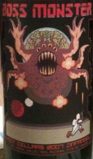

|
North America >
USA >
California >
Sonoma County >
Dry Creek Valley >
Woot Cellars >
Boss Monster Zinfandel

2007 Boss Monster Zinfandel Dry Creek Valley
Woot Cellars
Geyserville, CA
89% Zinfandel blended with 11% Petitie Sirah and aged 11 months in American & French oak.
Acidity: 3.65 pH
Price: $10
14.7% alcohol
750 ml

2012 tasting - This dark red has a deep, fruity bouquet. The flavor is spicy with a smooth, complex finish.
2011 tasting - A dark red with a dry, spicy bouquet coupled to a light flavor and a slightly sweet aftertaste.
2010 tasting - A dark, dark red with an excellent, deep bouquet, this Zinfandel has a strong, chewy flavor coupled to a dry
aftertaste.
2009 tasting - A solidedly dark red with a bouquet hinting of cherries, this Dry Creek Zin has a tart flavor that packs quite a
wallop! There are spicy notes in the strong, cherry finish.
More about Petite Sirah and
Zinfandel.
|